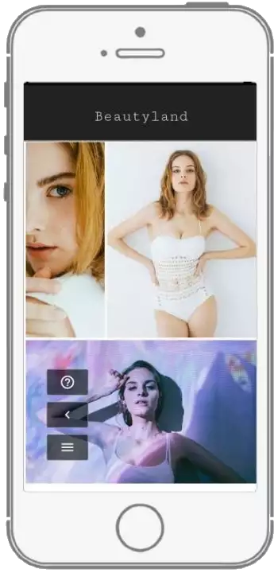
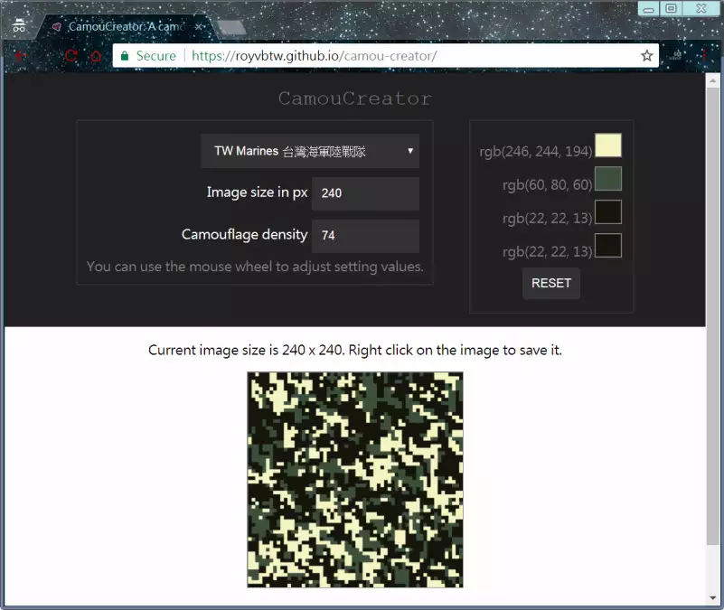
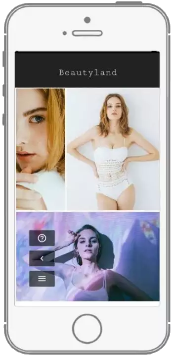
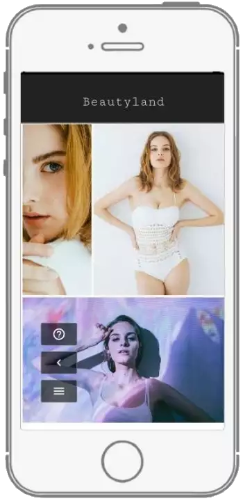

My apps
Web APP
Standalone node.js app
Chrome extensions
Every public web services below has HTTPS supported by Let's Encrypt and use http/2 protocol.
Beautyland
Beautyland screenshots

https://beautyland.royvbtw.uk/
GitHub
An image gallery service for the PTT beauty board. It displays image contents fetched from the Beautyland API in an elegant and easy to read way.
React/redux as the UI foundation.
Progressive web app implement. Can be added to mobile user's home screen.
Service hosted on Amazon EC2 instance with the nginx as the reverse proxy.
Service managed by pm2 .
Beautyland API
https://beautyland-api.royvbtw.uk/
GitHub
An image data service of the PTT Beauty board.
A nodejs/expressjs based web API service.
Persist data by mongodb. Cloud database service provided by mlab.com.
Service hosted on Amazon EC2 instance with the nginx as the reverse proxy.
Auto deployed from github by AWS Codedeploy.
RTSM
RTSM screenshots
https://royvbtw.github.io/rtsm
GitHub
A user-friendly, responsive designed web service for display information from the RTSM API service.
Use React as the UI foundation.
Responsive web design
Service hosted on github.io
RTSM API service
https://rtsmapi.royvbtw.uk/
GitHub
A real-time motorway traffic speed data API service of Taiwan. It fetches and parses data from the national freeway bureau official site. The result data is formatted in JSON.
A nodejs/expressjs based web API service
A RESTful API design
Service hosted on Amazon EC2 instance with the nginx as the reverse proxy.
Auto deployed from github by AWS Codedeploy.
Process manager: pm2 module.
CamouCreator
CamouCreator screenshot

https://royvbtw.github.io/camou-creator/
GitHub
This a camouflage texture creator. You can apply different colors and image size to the camouflage texture.
Use React as the UI foundation.
Responsive web design
Service hosted on github.io
Grumbler
https://grumbler.royvbtw.uk/
GitHub
Node.js/Expressjs based web service
Responsive web design
Use Handlebar as the expressjs view engine.
Database: mongodb, use mongoose middleware. Hosted on mlab.com.
Google/facebook directly login support
Use bcrypt to store salted passwords.
Process manager: pm2 module.
Service hosted on Amazon EC2 instance and use nginx as the reverse proxy.
Auto deployed from github by AWS Codedeploy.
Standalone Node.JS APP
Other projects
Roy Lu @18 Dec 2017
Back to home
 
